17/05/2026 — Đau ngực và LBBB
Bản dịch tiếng Việt của bài "Chest pain and LBBB" – Dr. Smith’s ECG Blog. Giữ nguyên toàn bộ 11 hình ảnh của bản gốc.
Một bệnh nhân nam trung niên nhập viện vì đau ngực, khởi phát 1 giờ trước đó. Bệnh nhân được ghi điện tâm đồ ngay lập tức:

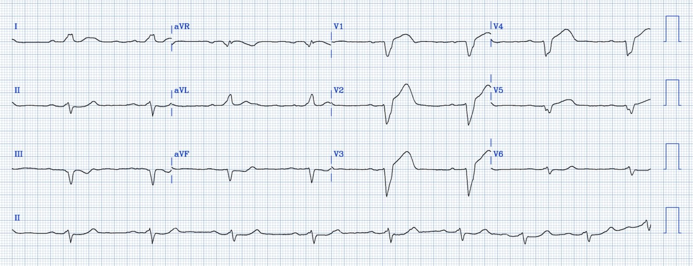
Bạn nghĩ gì?
Có nhịp xoang với phức bộ rộng là blốc nhánh trái (left bundle branch block, LBBB). Ngoài ra còn có ST chênh lên trái chiều (discordant) quá mức xét theo tỷ lệ (proportionally) ở chuyển đạo V2, và sóng T tối cấp (hyperacute T-waves) ở các chuyển đạo V1-V4. Theo tiêu chuẩn Sgarbossa cải biên theo Smith (Smith Modified Sgarbossa), chỉ cần có 1 chuyển đạo với STE trái chiều quá mức xét theo tỷ lệ [tỷ số ST/S 25% (độ nhạy 80% và độ đặc hiệu 99%)]. [Tỷ số ST/S, với ST đo tại điểm J so với chỗ nối PQ/điểm khởi đầu QRS]. Tỷ số ST/S >/= 20% có độ nhạy 84% và độ đặc hiệu 94%. Tôi bắt đầu lo ngại với bất kỳ tỷ số nào > 15%, vì tỷ số ST/S tối đa bình thường ở V1-V4 là 11%.
Tỷ số ở V2 là 2.75/7.5, tức là 37%.
LBBB mới hay cũ không quan trọng! Alencar JN de, và cs. Accuracy of Left Bundle Branch Block Chronology and Electrocardiography Criteria for Acute Myocardial Infarction Diagnosis: A Systematic Review and Meta-analysis. Tạp chí Arq Bras Cardiol [Internet], năm 2025;122(10):e20250109. Truy cập tại: http://dx.doi.org/10.36660/abc.20250109.
Như vậy điện tâm đồ này có giá trị chẩn đoán tắc LAD. Để tham khảo, đây là một ví dụ LBBB không có thiếu máu cục bộ (và dĩ nhiên không có OMI):

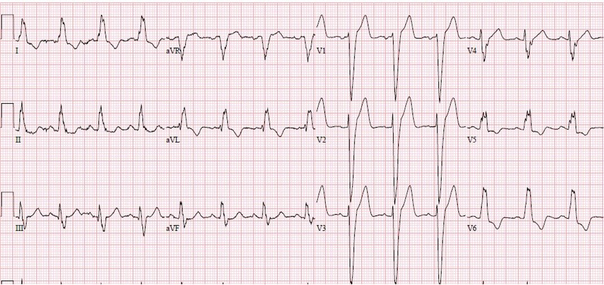
Đây là hai bản ghi đặt cạnh nhau:

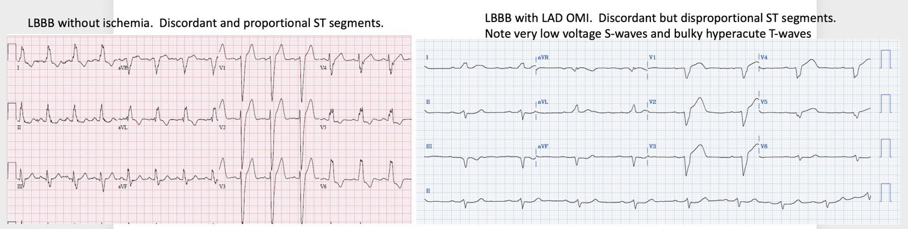
Tất cả các đoạn ST đều trái chiều VÀ tương xứng.
Đây là kết quả của mô hình AI ECG PMCardio Queen of Hearts:

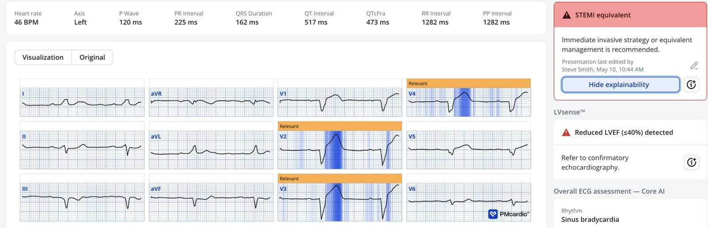
Ứng dụng PMcardio for Individuals App 3.0 mới nay đã có mô hình Queen of Hearts mới nhất và khả năng giải thích của AI (bản đồ nhiệt màu xanh)! Tải ngay cho iOS hoặc Android. https://www.powerfulmedical.com/pmcardio-individuals/ (BS. Smith và BS. Meyers đã huấn luyện mô hình AI này và là cổ đông của Powerful Medical). Là thành viên cộng đồng của chúng tôi, bạn có thể dùng mã DRSMITH20 để được giảm 20% độc quyền cho năm đầu tiên của gói đăng ký theo năm. Tuyên bố miễn trừ trách nhiệm: Một số mô-đun AI ECG là thiết bị y tế mang dấu CE theo EU MDR và chỉ được chứng nhận lưu hành tại Liên minh châu Âu và Vương quốc Anh. Công nghệ PMcardio chưa được Cục Quản lý Thực phẩm và Dược phẩm Hoa Kỳ (FDA) cấp phép sử dụng lâm sàng tại Hoa Kỳ, và hiện chưa có mặt tại Hoa Kỳ.
Đáng tiếc là các bác sĩ điều trị đã không đưa ra được chẩn đoán.
Họ ghi một điện tâm đồ khác 1 giờ sau đó:

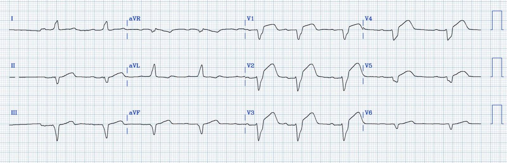
Lúc này ST chênh lên nhiều hơn hẳn: 1.75 mm ở V1, 3.5 mm ở V2, 2.5 ở V3, 1.5 ở V4, với các tỷ số lần lượt là 35%, 50%, 25% và 28%. (Lúc này đã có 4 tỷ số lớn hơn 25%!)
Phòng thông tim (cath lab) được kích hoạt và phát hiện tắc 100% LAD. Troponin I đạt đỉnh ở mức cực lớn 270,000 ng/L, cho thấy một lượng cơ tim bị mất rất lớn.
Đáng tiếc là một lượng cơ tim khổng lồ đã chết trong một giờ chậm trễ đó. Bệnh nhân lẽ ra có thể được tái tưới máu vào thời điểm 2 giờ sau khởi phát, nhưng thực tế lại là 3 giờ sau khởi phát. Hãy nhớ rằng 80% lợi ích giảm tử vong của tái tưới máu nằm trong 4 giờ đầu sau khởi phát đau ngực. Hãy xem trì hoãn 1 giờ làm mất đi bao nhiêu lợi ích. Từ giờ thứ 2 đến giờ thứ 3, 30% lợi ích giảm tử vong bị mất đi (xem biểu đồ này):

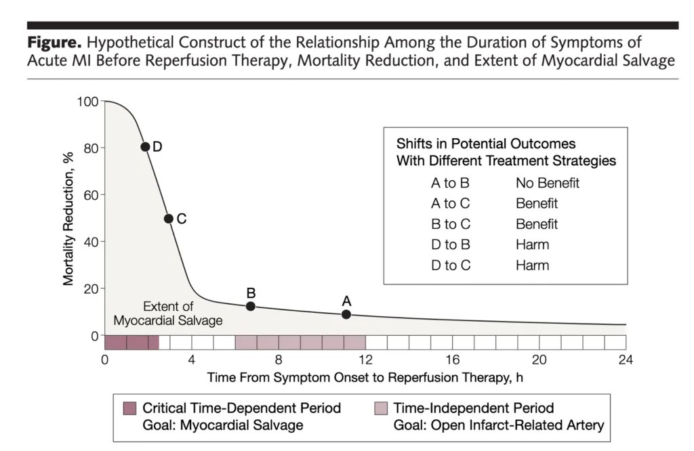
Gersh BJ, Stone GW, White HD, Holmes DR Jr. Pharmacological facilitation of primary percutaneous coronary intervention for acute myocardial infarction: is the slope of the curve the shape of the future? Tạp chí JAMA [Internet], năm 2005;293(8):979–86. Truy cập tại: http://www.ncbi.nlm.nih.gov/entrez/query.fcgi?cmd=Retrieve&db=PubMed&dopt=Citation&list_uids=15728169
Các điện tâm đồ tiếp theo
Đây là bản ghi 20 phút sau PCI:

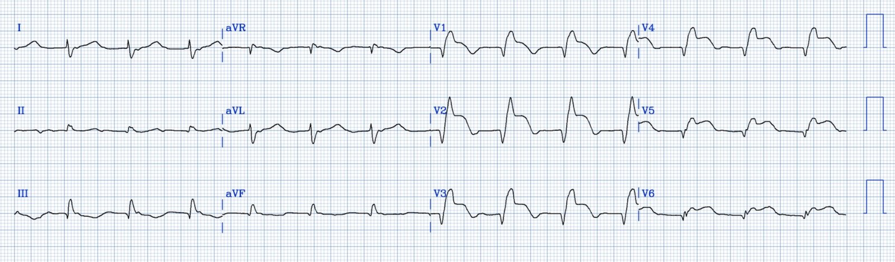
Bản ghi này giờ cho thấy nhịp tái tưới máu là nhịp tự thất gia tốc (AIVR). (để ý là không có sóng P). Nhịp thất khởi phát từ thất trái (LV), tạo nên hình dạng blốc nhánh phải (RBBB). AIVR là một nhịp tái tưới máu. Bản ghi cho thấy ST chênh lên dai dẳng và khiến OMI dễ nhận ra hơn nhiều, dù đang tái tưới máu, với phần cuối sóng T đảo ngược.
Xem ca này: Probable Left Main coronary artery occlusion/obstruction, with STE in aVR, alternating BBB, and arrest
Đây là bản ghi 2.7 giờ sau PCI:

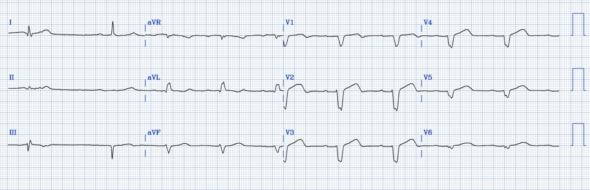
Lúc 5.7 giờ sau PCI:

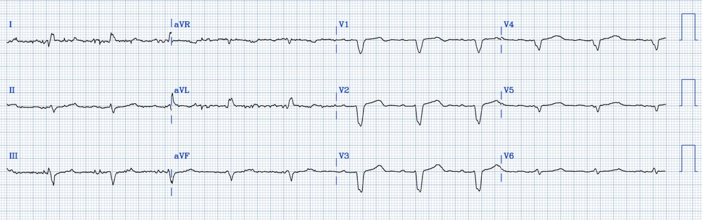
Và bây giờ, lúc 9.5 giờ sau PCI:

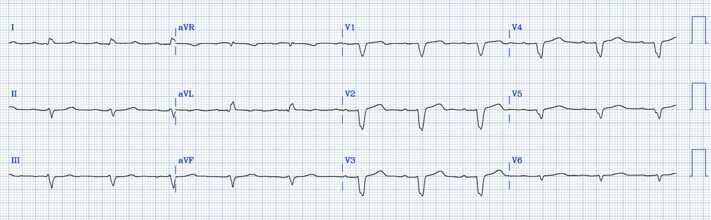
OMI rất thường bị bỏ sót khi có LBBB, nhưng không nhất thiết phải như vậy. Tôi có nhiều ca tương tự khác trên blog này; đây là một ca bỏ sót khó tin: Acute chest pain with LBBB and obvious OMI, worsening on serial ECGs, but repeatedly missed by physicians and Marquette 12SL
Những điểm cần học:
- Hãy dùng mô hình AI ECG PMCardio Queen of Hearts cho MỌI điện tâm đồ để bạn không bỏ sót OMI.
- Tiêu chuẩn Sgarbossa cải biên theo Smith có hiệu quả. Tiêu chuẩn này được gần như mọi hướng dẫn thực hành Tim mạch khuyến cáo dùng để chẩn đoán tắc động mạch vành cấp khi có LBBB.
= = =
==================================
BÌNH LUẬN CỦA TÔI, bởi KEN GRAUER, MD (17/5/2026):
Cách xử trí trong bài hôm nay có vấn đề vì một số lý do. Tôi tập trung Bình luận của tôi vào điện tâm đồ ban đầu — vì đây là nơi các vấn đề bắt đầu.
- — i) Mặc dù có bất thường ST-T ở gần như mọi chuyển đạo — các dấu hiệu cấp tính đã không được nhóm điều trị nhận ra.
- — ii) Tôi ngờ rằng nhóm điều trị đã không nhận ra rối loạn dẫn truyền. Điều này quan trọng — vì tiêu chuẩn thiếu máu cục bộ/nhồi máu cấp thay đổi tùy theo đặc tính dẫn truyền.
- — iii) Mặc dù có bệnh sử CP (đau ngực) cấp và có sự không chắc chắn về cách đọc điện tâm đồ #1 — điện tâm đồ ban đầu đã không được ghi lại trong suốt 1 giờ. Như chúng tôi đã minh họa trong rất nhiều ca trên Dr. Smith’s ECG Blog — thay đổi ST-T ”động” (dynamic) có thể xuất hiện trong vòng vài phút ở một ca nhồi máu đang tiến triển. Xét mức Troponin đỉnh cuối cùng đã tăng cao đến đâu ( = 270,000 ng/L) — và — Xét điện tâm đồ đã thay đổi nhiều đến mức nào vào lúc điện tâm đồ ban đầu cuối cùng được ghi lại sau 1 giờ — rất có khả năng những thay đổi ST-T đáng kể đã được ghi nhận nếu điện tâm đồ ban đầu được ghi lại sớm hơn nhiều (tức là, lý tưởng nhất là trong vòng 10-20 phút sau bản ghi đầu tiên mỗi khi có bất kỳ điều không chắc chắn nào về việc một OMI có đang tiến triển hay không).
ĐIỀU CỐT LÕI: Theo BS. Smith — cách nhanh nhất và dễ nhất để có thêm trợ giúp ngay tại giường khi đánh giá thiếu máu cục bộ/nhồi máu cấp — là thường quy sử dụng mô hình AI ECG PMcardio Queen of Hearts cho mọi bệnh nhân đến khoa cấp cứu (ED) với triệu chứng mới có thể do nhồi máu cơ tim cấp.
- Phản hồi cho các bác sĩ điều trị về những ca như thế này là thiết yếu — cũng như công việc khó khăn và đòi hỏi sự khiêm tốn không kém là học xem điều gì đã bị bỏ sót trên điện tâm đồ — và làm thế nào để không bỏ sót nó vào lần tới (tức là, hiểu được những chuyển đạo nào và dấu hiệu ST-T nào đã giúp QOH nhận ra ngay lập tức OMI cấp mà các bác sĩ điều trị đã bỏ qua).
= = =
Nhìn lại điện tâm đồ ban đầu của ca hôm nay …
Tôi đã sao chép lại và đánh dấu điện tâm đồ ban đầu của ca hôm nay trong Hình 1. Như BS. Smith đã bàn ở trên — tiêu chuẩn Sgarbossa cải biên theo Smith có giá trị chẩn đoán tắc LAD cấp rõ ràng đã được thỏa mãn. Dù vậy — cũng đáng nêu ra toàn bộ các bất thường điện tâm đồ cần được ghi nhận.
- Nhịp là nhịp chậm xoang, tần số hơi dưới 50 lần/phút (khoảng R-R dài hơn 6 ô lớn một chút). Mức độ nhịp chậm này ở một bệnh nhân đau ngực cấp phải lập tức làm tăng mức lo ngại.
- Có blốc AV độ 1 (khoảng PR ~0.24 giây).
- QRS rộng (rõ ràng ≥3 ô lớn ==> thời gian ít nhất 0.12 giây ở nhiều chuyển đạo). Như BS. Smith đã nêu — hình dạng QRS phù hợp nhất với LBBB (blốc nhánh trái), ở chỗ các phức bộ QRS đều dương hoàn toàn ở các chuyển đạo bên trái I và aVL — và chủ yếu âm ở các chuyển đạo trước (dù theo phần “T.B.” của tôi bên dưới — sóng R dương ở chuyển đạo V6 còn kém xa so với hình ảnh thường thấy trong LBBB thực sự).
- Có điện thế thấp (tức là, không có phức bộ QRS nào ở 6 chuyển đạo chi >5mm — với biên độ QRS giảm rõ rệt ở các chuyển đạo trước tim bên V4,V5,V6). Cần nhớ rằng ở bệnh nhân đau ngực cấp — trong số các nguyên nhân gây điện thế thấp có nhồi máu diện rộng với giảm cung lượng tim do “choáng” cơ tim (BẤM VÀO ĐÂY — để mở LINK ở đầu mỗi trang của Dr. Smith’s ECG Blog dẫn tới Danh sách các nguyên nhân gây điện thế thấp của chúng tôi).
Ngoài việc thỏa mãn tiêu chuẩn Sgarbossa cải biên theo Smith cho OMI cấp ở bệnh nhân LBBB — còn có các bất thường ST-T về chất ở gần như tất cả các chuyển đạo trong Hình 1 (Khi nói bất thường “về chất” (qualitative) — ý tôi là những thay đổi ST-T đơn giản là không nên có ở đó).
- Các đường chấm ĐỎ trên đường nền đoạn ST ở các chuyển đạo V1-đến-V4 giúp làm nổi bật mức độ ST chênh lên tại điểm J (các mũi tên HỒNG nhỏ). Như BS. Smith đã nêu — mức ST chênh lên tại điểm J này là quá mức ở chuyển đạo V2.
- Nhưng hơn cả mức ST chênh lên ở chuyển đạo V2 — sóng ST-T ở các chuyển đạo V1-đến-V5 đều “đầy đặn hơn” ở đỉnh và rộng hơn nhiều ở chân so với mong đợi, xét độ sâu khiêm tốn của sóng S ở các chuyển đạo này (= rõ ràng “không tương xứng”). Lưu ý hình dạng bất thường rõ rệt của đoạn khởi đầu ST thẳng đuỗn ở các chuyển đạo V1,V3,V4,V5 — với sóng T ở chuyển đạo V2 thực sự còn cao hơn độ sâu của sóng S. Đây đều là những thay đổi ST-T mà “con mắt” có kinh nghiệm biết ngay là đơn giản không nên có ở đó.
- Chuyển đạo V6 đáng chú ý với ST dẹt bất thường. Khi xem cùng với ST chênh lên và các thay đổi tối cấp ở 5 chuyển đạo trước tim còn lại — điều này gợi ý “xoáy” trước tim (Precordial Swirl) ở bệnh nhân LBBB (Xem phần Bình luận của tôi ở cuối bài ngày 15 tháng Mười năm 2022 để biết phần tổng hợp của tôi về cách nhận ra “xoáy” (Swirl) ).
- Về các chuyển đạo chi — Bình thường với LBBB, sóng ST-T phải hướng ngược chiều (tức là, chênh xuống) ở các chuyển đạo bên trái có sóng R dương hoàn toàn. Việc sóng T dương ở cả chuyển đạo I và aVL giúp dễ nhận ra đáp ứng ST-T bất thường ở các chuyển đạo này (mũi tên ĐỎ ở I,aVL).
- Cuối cùng — có thay đổi soi gương ở từng chuyển đạo dưới (tức là, ở các chuyển đạo II,III,aVF) — đây lại thêm một dấu hiệu nữa gợi ý tắc LAD đoạn gần cấp.
ĐIỀU CỐT LÕI: Với “con mắt” có kinh nghiệm ở bệnh nhân đau ngực cấp này — các dấu hiệu nêu trên là những bất thường ST-T ở gần như tất cả các chuyển đạo trong bản ghi này. Cộng thêm nhịp chậm đáng lo ngại + LBBB + blốc AV độ 1 + điện thế thấp lan tỏa — “bức tranh” tắc LAD đoạn gần cấp với nhồi máu diện rộng đang diễn ra (cần thông tim khẩn cấp kèm PCI ngay) — phải được mặc định cho đến khi chứng minh được điều ngược lại.
- Nếu không đi đến kết luận này một cách nhanh chóng khi nhìn bản ghi ban đầu — thì cấp bách cần đến sự trợ giúp của mô hình AI ECG QOH.
- = = =
- T.B. (P.S.): Với LBBB điển hình — phải có sóng R dương hoàn toàn ở các chuyển đạo bên trái I và V6. Thay vào đó, ta thấy điện thế QRS tiếp tục giảm dần từ V4-đến-V5-đến-V6, với phần dương chỉ ở mức tối thiểu ở chuyển đạo trước tim nằm phía bên nhất này (đây lại là một manh mối cuối cùng nữa về sự mất cơ tim trên quy mô lớn do nhồi máu diện rộng đang diễn ra ở bệnh nhân này).
= = =
Hình 1: Tôi đã sao chép lại và đánh dấu điện tâm đồ ban đầu của ca hôm nay (Để nhìn rõ hơn — tôi đã số hóa điện tâm đồ gốc bằng PMcardio).

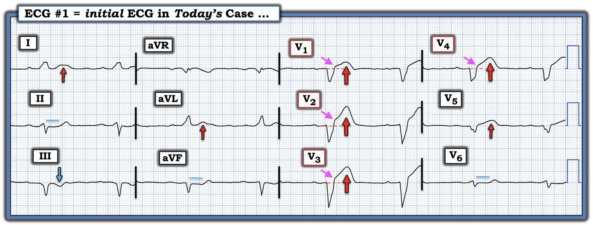
= = =
= = =